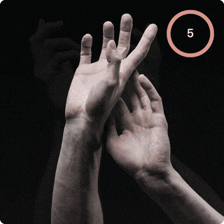
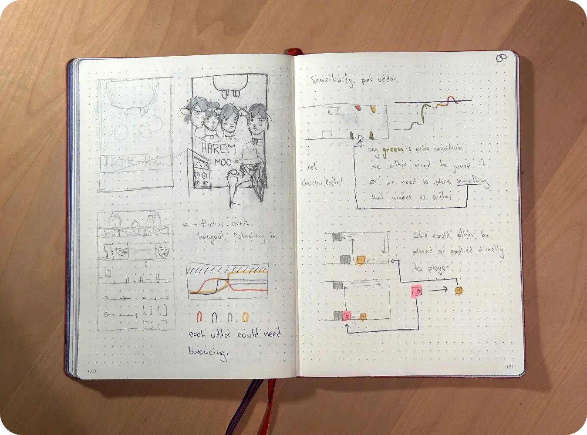
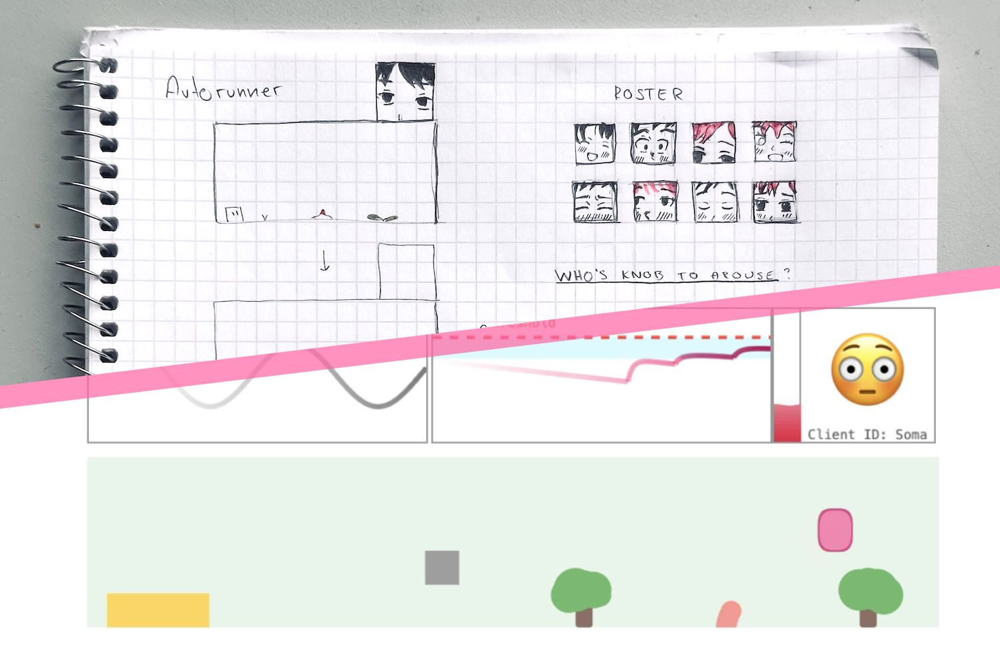
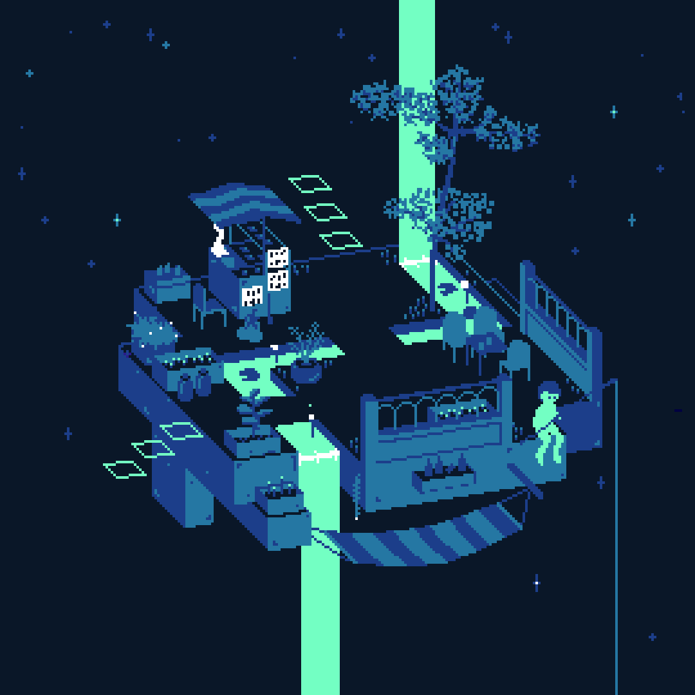
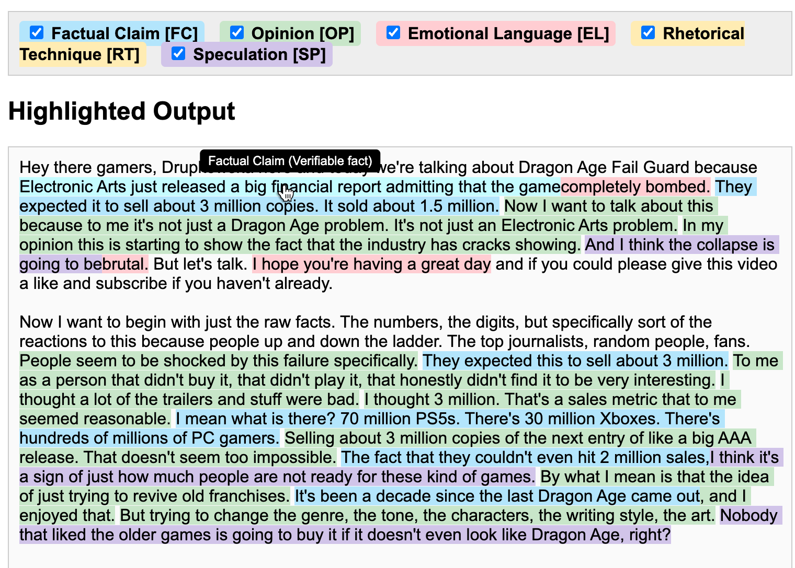
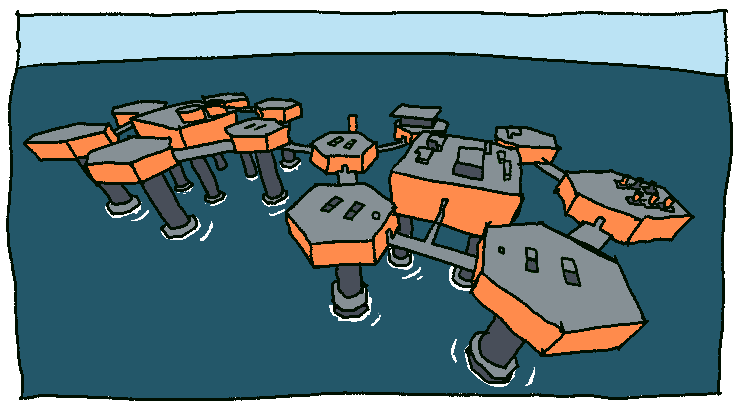
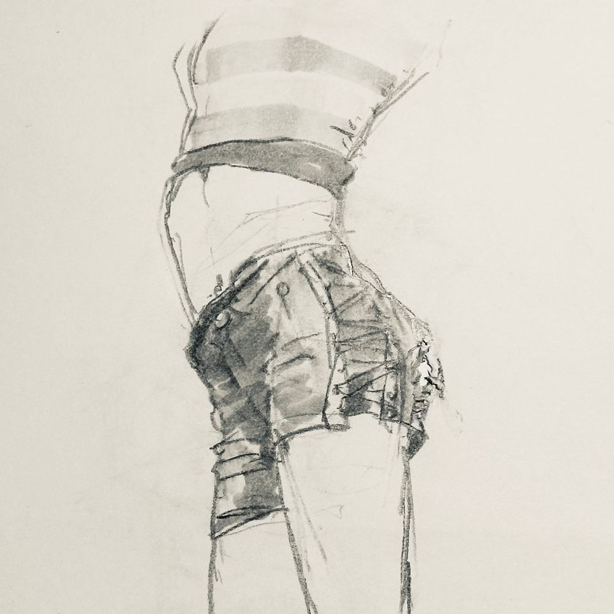
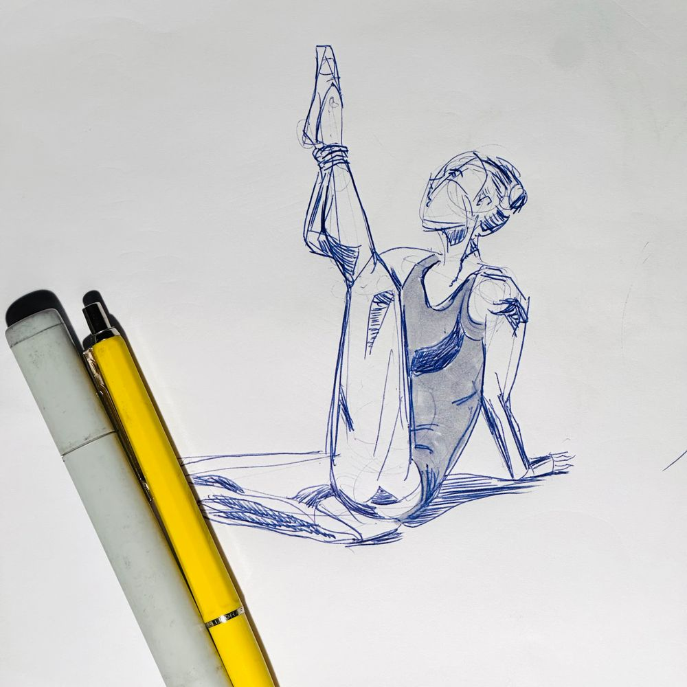
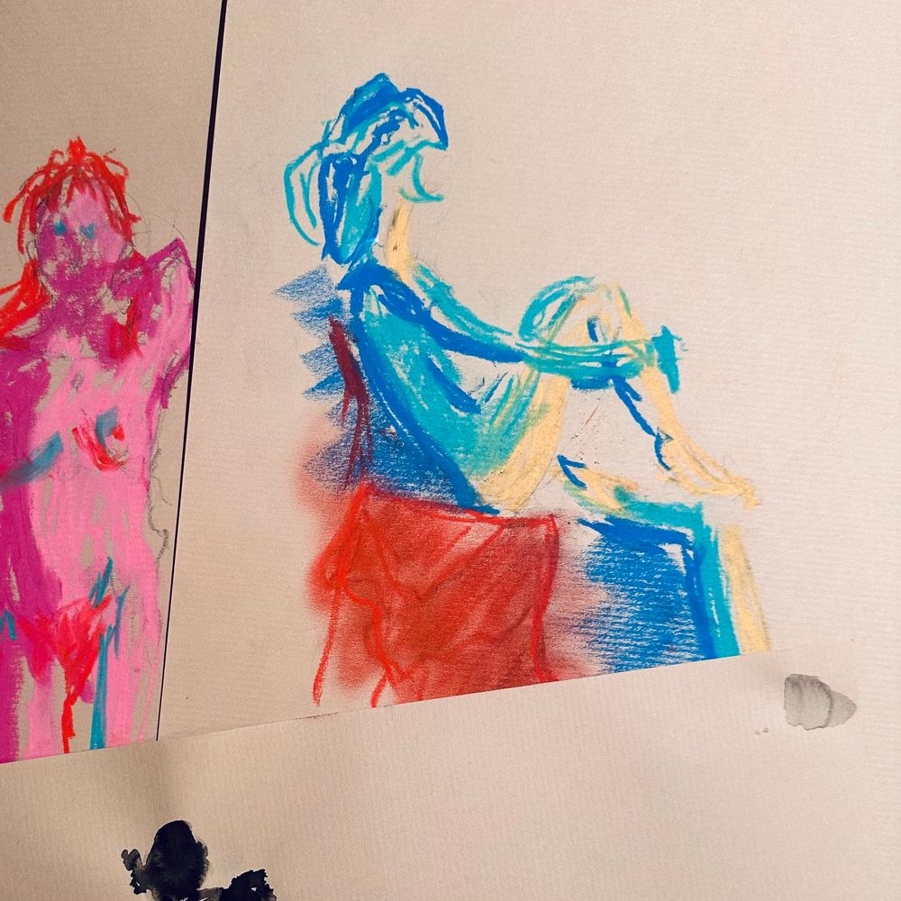
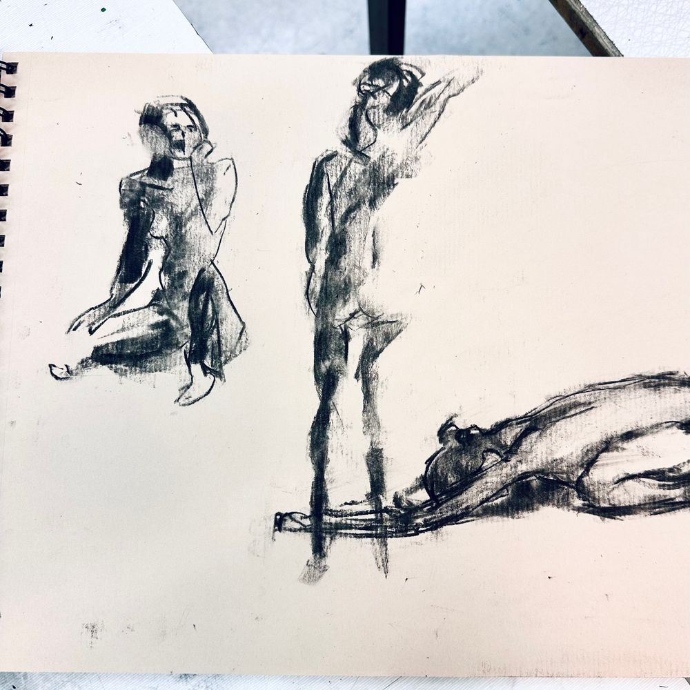

Henrik Pettersson
Game designer based in Gothenburg. More about me · Resume
Essays, tools, prototypes, and research on game design. Current projects →

tool
Dec 25, 2025
Stop Noodling is a timed drawing webapp. The tools works as plugin for Eagle (a software to organize locally images) and serve it so it's accessible from any device with a browser.

design
Nov 25, 2025
When I started designing games professionally, I didn't have the technical skills to program my own prototypes so with Pen & Paper I designed my games. It's still my preferred way for idea generation.

playable
Nov 3, 2025
The male nipple is so enigmatic! How does one touch it? Does it do anything? Do you know? Prove it!

narrative
Aug 13, 2025
Reality rips, and 4 strangers comes to on a stalled star-born train. To return, they must explore 9 platforms, mend what's broken, and confront the pull of a world that feels more like home than the one they left.

tool
Feb 22, 2025
There are a lot of YouTubers who release daily videos with long rants about their grievances with the video game industry. As a developer, it can be hard to take these rants at face value.

research
Sep 14, 2024
Using AI to translate Hideo Kojima's development diary from Japanese, examining accuracy and insights into the creative process.

Figure drawing, foreshortening, seated pose

Figure drawing anatomy gesture study

Figurative sketch torso study

Figure-drawing, stretching, gesture

Kroki lession gbg - pastel drawing

2 min charcoal sketch